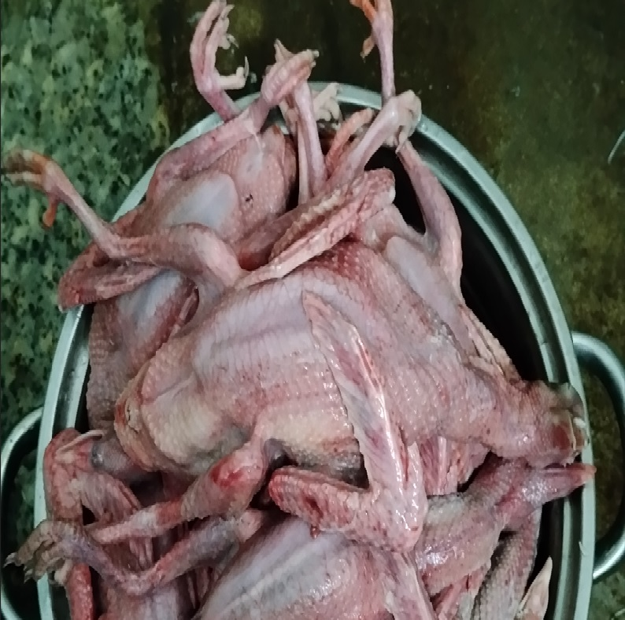

TIN TỨC & CHIA SẺ KINH NGHIỆM
(Nơi giao lưu, chia sẻ kỹ thuật nuôi bồ câu Pháp và cập nhật hoạt động của trại)
2. NHẤT CHIM RA RÀNG, NHÌ NÀNG BỎ GUÔC
Đăng ngày: 06/07/2026Ta thường nghe câu: “Nhất chim ra ràng, nhì nàng bỏ guốc” hay câu: “Cau phơi tái, gái mãn tang, bồ câu ra ràng, gà mái ghẹ”. Đó là người ta nói đến sự ngon, quý, bổ dưỡng của chim ra ràng. Có người cho rằng chim ra ràng ngon là chim khoảng 14-15 ngày tuổi nó mới mềm ngọt và chứa nhiều chất bổ dưỡng. Song thực tế, để có thịt chim vừa ngon, bổ dưỡng và tích tụ nhiều chất tinh túy nhất là chim lúc chim bố mẹ bắt đầu không còn mớm cho thức ăn nữa và chim non bắt đầu tập tự mổ thức ăn. Đó là lúc chim từ 27 đến 30 ngày tuổi. Ngày nay, chim bồ câu ra ràng người ta có thể làm rất nhiều món ngon thường dùng trong gia đình như: - Cháo chim bồ câu ra ràng - Bồ câu ra ràng hầm thuốc bắc - Bồ câu ra ràng nấu đậu đen - Xôi bồ câu ra ràng Có thể ví dụ như món bồ câu ra ràng hầm hoặc chưng cách thủy. Làm món này nên để nguyên con. Cho bồ câu vào một cái tô lớn cùng hạt sen, nếp, đậu xanh, kỷ tử, táo tàu, thục quy, ý dĩ và lá ngải cứu vào trộn đều, hầm đến khi nào thịt bồ câu chím nhừ, có thể ăn nóng cả cái lẫn nước. Giản dị hơn là bồ câu chưng cách thủy, món này không lại không cầu kì chút nào: bồ câu làm sạch, cho nguyên con vào tô, nêm ít gia vị như tiêu, mắm ngon, bột nêm rồi chưng cách thủy (chưng khi nào con chim mềm cả thịt lẫn xương là được). Thịt chim bồ câu ra ràng bổ khí huyết, bồi dưỡng cơ thể tốt nên phù hợp cho người gầy yếu, suy dinh dưỡng, phụ nữ có thai, trẻ em và người mới bệnh dậy.

1. Kỹ thuật thiết kế chuồng nuôi bồ câu Pháp đạt hiệu quả cao
Đăng ngày: 06/07/2026Để chim bồ câu Pháp sinh sản tốt và ít bệnh tật, bà con cần chú ý đến không gian chuồng nuôi phải thông thoáng, sạch sẽ và đón được ánh sáng tự nhiên. Hệ thống máng ăn, máng uống tự động cần được bố trí hợp lý để tiết kiệm công chăm sóc...